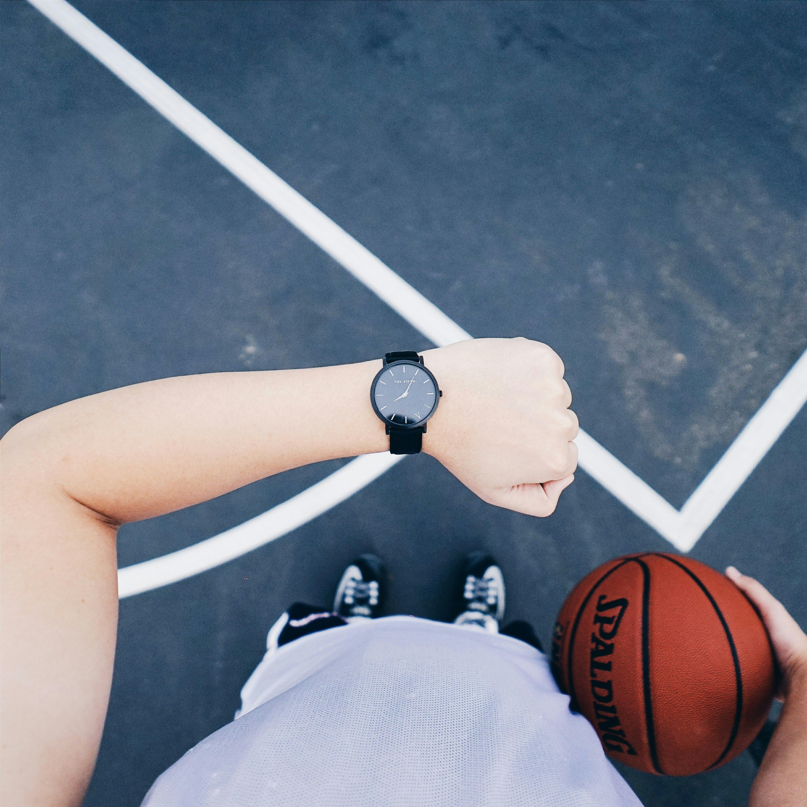

Basquete

O Basquete é um esporte coletivo que consiste em dois times de 5 jogadores cada. Os times são divididos em 5 posições, sendo elas o Armador, o Ala-Armador, o Ala, o Ala-Pivô e o Pivô. Cada um tem uma função específica, mas podem também exercer outras de outras posições.

Aquecimento
Assim como em todo esporte, ao praticar Basquete você precisa se alongar com exercícios que ativem os músculos, melhorem a mobilidade e aumentem a temperatura temporal.
Atletas profissionais costumam dividir o aquecimento em:
- Corridas Leves: Corra em volta da quadra para elevar o ritmo cardíaco.
- Saltos com polichinelos: Ativam os braços e pernas, aumentando a circulação.
- Mobilidade Articular: Realize movimentos circulares nos tornozelos, joelhos, quadris e ombros para preparar as articulações.
Arremessos: E por último, claro, é recomendado treinar alguns arremessos, para aquecer seu corpo e apurar a mira ao arremessar a bola.

Cuidados Pessoais
É importante ao praticar Basquete, tomar alguns cuidados extras para evitar lesões e se manter saudável. É um esporte físico, então há muito risco ao trombar com outros jogadores, além de que por necessitar de saltos constantes, pode agravar as chances de lesões.
Alguns dos Cuidados Pessoais a serem tomados incluem:
- Tênis de Basquete: É primordial escolher bem o tênis a ser usado, de preferência, opte por um específico para o esporte, eles ajudam a saltar mais alto e a pousar com mais segurança. Usar o tênis indevido pode acarretar em aterrissagens perigosas e riscos maiores de lesões.
- Roupas Confortáveis e Adequadas: Use roupas leves e flexíveis, como shorts e camisetas que permitam boa mobilidade e que deixem seu corpo transpirar corretamente.
- Protetores: Caso seja possível, é recomendado o uso de protetores bucais, joelheiras e cotoveleiras para mitigar os riscos ao cair e trombar com outros jogadores.